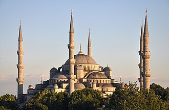

PrésentationتقديمOverview
La Mosquée bleue ou la mosquée du sultan Ahmet est l'une des mosquées historiques d'Istanbul. Elle est notamment connue pour les céramiques à dominante bleue qui ornent les murs intérieurs, et lui ont valu son nom en Europe.
جامع السلطان أحمد ويُعرف أيضا خارج تركيا باسم الجامع الأزرق ، بناه السلطان أحمد الأول وهو أحد أشهر وأهم المساجد في مدينة إسطنبول التركية. يقع المسجد في ميدان السلطان أحمد ويقابله مسجد آيا صوفيا، الذي حوله أتاتورك إلى متحف ثم أعيد مسجداً. ويشتهر جامع السلطان أحمد بعمارته المميزة حيث يُعد من أهم وأضخم المساجد في العالم الإسلامي.
The Sultan Ahmed Mosque, popularly known as the Blue Mosque, is an Ottoman-era historical imperial mosque located in Istanbul, Turkey. It was constructed between 1609 and 1617 during the rule of Ahmed I. It attracts a large number of tourists and is one of the most iconic and popular monuments of Ottoman architecture.
Sultanahmet Camii, 1609-1617 yılları arasında Osmanlı Padişahı I. Ahmed tarafından İstanbul'daki tarihî yarımadada, Mimar Sedefkâr Mehmed Ağa'ya yaptırılmıştır. Cami; mavi, yeşil ve beyaz renkli İznik çinileriyle bezendiği için ve yarım kubbeleri ile büyük kubbesinin içi de yine mavi ağırlıklı kalem işleriyle süslendiği için Avrupalılar tarafından "Mavi Camii " olarak adlandırılır. Ayasofya'nın 1935 yılında camiden müzeye dönüştürülmesiyle, İstanbul'un ana camii konumuna ulaşmıştır.
Masjid Sultan Ahmed atau yang lebih dikenal dengan Masjid Biru adalah sebuah masjid bersejarah peninggalan Kesultanan Utsmaniyah yang berada di distrik Fatih, Provinsi Istanbul, Turki. Masjid yang berfungsi, juga menarik banyak pengunjung wisata ini, dibangun pada tahun 1609 dan selesai pada tahun 1616 atau pada masa pemerintahan Sultan Ahmed I. Bangunan masjid ini mencakup türbe berisi makam Ahmed I, madrasah, dan rumah perawatan.
سلطان احمد مسجد المعروف نیلی مسجد استنبول، ترکی میں واقع ایک مسجد ہے۔ اسے بیرونی دیواروں کے نیلے رنگ کے باعث نیلی مسجد کے طور پر جانا جاتا ہے۔ تعمیر کے وقت یہ ترکی کی واحد مسجد تھئ جس کے چھ مینار تھے۔ استنبول کی وہ دوسری مسجد جس کے چھ مینار ہیں اس کا نام جاملیجہ مسجد ہے جب تعمیر مکمل ہونے پر سلطان کو اس کا علم ہوا تو اس نے سخت ناراضی کا اظہار کیا کیونکہ اُس وقت صرف مسجد حرام کے میناروں کی تعداد چھ تھی لیکن کیونکہ مسجد کی تعمیر مکمل ہو چکی تھی اس لیے مسئلے کا حل یہ نکالا گیا کہ مسجد حرام میں ایک مینار کا اضافہ کرکے اُس کے میناروں کی تعداد سات کر دی گئی۔ مسجد کے مرکزی کمرے پر کئی گنبد ہیں جن کے درمیان میں مرکزی گنبد واقع ہے جس کا قطر 33 میٹر اور بلندی 43 میٹر ہے۔ مسجد کے اندرونی حصے میں زیریں دیواروں کو ہاتھوں سے تیار کردہ 20 ہزار ٹائلوں سے مزین کیا گیا ہے جو ازنک میں تیار کی گئیں۔ دیوار کے بالائی حصوں پر رنگ کیا گیا ہے۔ مسجد میں شیشے کی 200 سے زائد کھڑکیاں موجود ہیں تاکہ قدرتی روشنی اور ہ
Die Sultan-Ahmed-Moschee in Istanbul wurde 1609 von Sultan Ahmed I. in Auftrag gegeben und bis 1616, ein Jahr vor dem Tod des Sultans, vom Sinan-Schüler Mehmet Ağa erbaut, sie ist ein Hauptwerk der osmanischen Architektur. Nach der Säkularisation der kaum 500 Meter entfernten Hagia Sophia war sie bis Juli 2020 Istanbuls Hauptmoschee, seit dem 24. Juli 2020 ist die Hagia Sophia wieder die Hauptmoschee der Stadt.
La mezquita Azul o mezquita del Sultán Ahmed es una de las grandes mezquitas de Estambul, obra de Sedefkar Mehmet Ağa, discípulo del arquitecto Mimar Sinan. Está situada frente a la Gran Mezquita de Santa Sofía, separadas ambas por un jardín, y fue la única de la ciudad con seis alminares hasta la construcción de la mezquita de Çamlıca, inaugurada en 2016. En latín significaba "la casa de la luna" y tardó 4 años desde que mandaron construirla hasta que se empezó a construir, ya que en aquella época había una gran crisis económica y no se disponía del dinero suficiente para construirla.
La Sultan Ahmet Camii, meglio conosciuta come Moschea Blu, è una delle più importanti moschee di Istanbul, costruita dall'architetto ottomano di origine albanese Sedefkar Mehmed Agha. Essa si trova nel distretto di Fatih, nel mahalle (quartiere) di Sultanahmet, che prende il nome dalla moschea stessa.
A Mesquita do Sultão Ahmed, também conhecida como Mesquita Azul, é uma mesquita otomana de Istambul, Turquia. Foi construída entre 1609 e 1616 e está situada na Praça Sultanahmet, no distrito de Fatih, em frente da Basílica de Santa Sofia, da qual se encontra separada por um espaço ajardinado. É uma das 5 mesquitas da Turquia que possui seis minaretes.
De Sultan Ahmetmoskee of de Blauwe Moskee is een moskee in Istanboel. De naam "Blauwe Moskee" is hoofdzakelijk internationaal gebruikelijk vanwege de vele blauwe tegels uit het stadje İznik (İznik-keramiek) die te zien zijn aan de binnenkant van de moskee. Van buiten is de moskee grijs van kleur.
蘇丹艾哈邁德清真寺 是土耳其的國家清真寺，也是土耳其最大城市及鄂圖曼帝國首都伊斯坦堡的清真寺古蹟。蘇丹艾哈邁德清真寺是其中一個因室內磚塊所用的顏色而被稱為藍色清真寺的清真寺。
スルタンアフメト・モスク は、トルコのイスタンブールを代表するモスクで、世界遺産であるイスタンブール歴史地域の歴史的建造物群のひとつ。オスマン帝国の第14代スルタン・アフメト1世によって1609年から1616年の7年の歳月をかけて建造された。設計はメフメト・アー。「世界で最も美しいモスク」と評される。
술탄 아흐메트 모스크(튀르키예어: Sultan Ahmet Camii)는 튀르키예의 이스탄불에 있는 대표적인 모스크로, 세계문화유산인 이스탄불 역사지구의 유서깊은 건축물 가운데 하나이다. 술탄 아흐메드 사원이라고도 한다. 오스만 제국의 제14대 술탄 아흐메트 1세의 명령에 따라 1609년부터 착공에 들어가 7년이란 공사기간 끝에 1616년에 완성되었다. 세계에서 가장 아름다운 모스크라는 평가를 받고 있다. 모스크 안 벽면을 온통 뒤덮은 푸른빛을 띠는 도자기 타일 때문에 블루 모스크라는 애칭으로 널리 알려져 있다.
सुल्तान अहमद मस्जिद या नीली मस्जिद इस्तांबुल, तुर्की में स्थित एक मस्जिद है। उसे बाहरी दीवारों के नीले रंग के कारण नीली मस्जिद के रूप में जाना जाता है।
Голуба́я мече́ть, или Мече́ть Султанахме́т , — первая по значению мечеть Стамбула. Насчитывает шесть минаретов: четыре, как обычно, по сторонам, а два чуть менее высоких — на внешних углах. Считается выдающимся образцом исламской и мировой архитектуры. Мечеть расположена на берегу Мраморного моря, в историческом центре Стамбула в районе Султанахмет, напротив Айя-Софии. Мечеть является одним из символов города.
Nhà thờ Hồi giáo Sultan Ahmed là một nhà thờ Hồi giáo lịch sử tại Istanbul, thành phố lớn nhất Thổ Nhĩ Kỳ và kinh đô của Đế quốc Ottoman (1453-1923). Nhà thờ Hồi giáo này thường được gọi là Thánh đường Xanh do gạch màu xanh ốp tường và nội thất của nó.
มัสยิดสุลต่านอาเหม็ด หรือ มัสยิดสีฟ้า เป็นมัสยิดสมัยออตโตมันที่ตั้งอยู่ในอิสตันบูล, ประเทศตุรกี ซึ่งสามารถรับนักท่องเที่ยวได้จำนวนมาก ตัวมัสยิดถูกสร้างระหว่าง ค.ศ. 1609 ถึง 1616 ในรัชสมัยของสุลต่านอาเหม็ดที่ 1 ในตัวกืลลีเย (Külliye) มีพระศพของสุชต่านอาเหม็ดที่ 1, มัดดารอซะฮ์ และบ้านพักรับรอง มีกระเบื้องสีน้ำเงินอยู่ด้านในกำแพงมัสยิด และตอนกลางคืนตัวมัสยิดกลายเป็นสีน้ำเงินจากแสงบนโดมหลัก 5 อัน, เสามินาเร็ต 6 อันและโดมรอง 8 อัน ตัวมัสยิดอยู่ถัดจากฮายาโซฟีอา
Blå moskén är en stor moské i Istanbul. På natten lyser strålkastare upp byggnaden från alla håll. Den lät byggas mellan 1606 och 1616 av den osmanske sultanen Ahmed I. Arkitekturen är delvis inspirerad av Hagia Sofia. Blå moskén är en populär utländsk benämning på moskén, men det officiella namnet är Sultan Ahmed-moskén. Smeknamnet kommer av att moskén är en av flera turkiska moskéer klädda med keramikplattor från Iznik som har blåa detaljer.
Moscheea Albastră, cunoscută oficial ca Moscheea Sultanului Ahmed este o moschee din Istanbul, Turcia. Este unul dintre cele mai importante lăcașuri de cult islamice din oraș, alături de Marea Moschee Ayasofya și totodată, una dintre principalele atracții turistice din Istanbul.
Histoires et récitsقصص ورواياتStories and accounts
Fait historiqueواقعة تاريخيةHistorical factPourquoi « bleue » ?لماذا «الزرقاء»؟Why "blue"?
Le sultan Ahmed Ier fit bâtir sa mosquée entre 1609 et 1617, face à Sainte-Sophie ; l'architecte était Sedefkâr Mehmed Ağa, élève du grand Sinan. Son vrai nom est mosquée du Sultan Ahmed. Les visiteurs l'appellent « mosquée bleue » à cause des milliers de carreaux de céramique d'Iznik et des peintures à dominante bleue qui couvrent l'intérieur. Le sultan, mort jeune, est enterré dans un mausolée juste à côté.بنى السلطان أحمد الأول مسجده بين سنتي 1609 و1617 قبالة آيا صوفيا، على يد المعماري صدفكار محمد آغا، تلميذ المعماري الكبير سنان. واسمه الحقيقي جامع السلطان أحمد. ويسمّيه الزوار «المسجد الأزرق» بسبب آلاف البلاطات الخزفية من إزنيق والزخارف المرسومة ذات اللون الأزرق الغالب التي تكسو داخله. وقد دُفن السلطان، الذي مات شابًّا، في ضريح بجواره.Sultan Ahmed I had his mosque built between 1609 and 1617, facing Hagia Sophia; the architect was Sedefkâr Mehmed Ağa, a pupil of the great Sinan. Its real name is the Sultan Ahmed Mosque. Visitors call it the "Blue Mosque" because of the thousands of Iznik ceramic tiles and mainly blue paintings that cover the interior. The sultan, who died young, is buried in a mausoleum right next to it.
Source :المصدر:Source: Wikipedia : Blue Mosque, Istanbul · UNESCO : Historic Areas of Istanbul
Légende populaireأسطورة شعبيةPopular legendSix minarets par erreur ?ست مآذن بسبب خطأ؟Six minarets by mistake?
Une légende populaire raconte que le sultan demanda des « minarets en or » (altın minareler en turc). L'architecte aurait compris « six minarets » (altı minare), car les deux mots se ressemblent. Or, à l'époque, seule la Mosquée sacrée de La Mecque avait autant de minarets, et on reprocha au sultan cet orgueil. Selon la même légende, il aurait alors payé un septième minaret pour la mosquée de La Mecque. Rien ne prouve cette histoire : c'est un récit populaire, mais les six minarets, eux, sont bien réels.تحكي أسطورة شعبية أن السلطان طلب «مآذن من ذهب» (ألتين مناره لر بالتركية)، ففهم المعماري «ست مآذن» (ألتي مناره) لتشابه الكلمتين. ولم يكن في ذلك الزمن مسجد له هذا العدد من المآذن إلا المسجد الحرام بمكة، فعِيب على السلطان ذلك. وتقول الأسطورة نفسها إنه موّل حينئذ مئذنة سابعة للمسجد الحرام. ولا دليل على هذه القصة، فهي حكاية شعبية، أما المآذن الست فحقيقية.A popular legend says the sultan asked for "golden minarets" (altın minareler in Turkish). The architect supposedly heard "six minarets" (altı minare), since the two words sound alike. At the time, only the Sacred Mosque in Mecca had that many minarets, and the sultan was criticised for his pride. According to the same legend, he then paid for a seventh minaret at the mosque in Mecca. Nothing proves this story: it is a folk tale, but the six minarets are very real.
Source :المصدر:Source: Wikipedia : Blue Mosque, Istanbul
Fait historiqueواقعة تاريخيةHistorical factDeux papes en visiteزيارة بابوينTwo popes visit
Le 30 novembre 2006, le pape Benoît XVI visita la mosquée bleue avec le mufti d'Istanbul ; il s'y arrêta en silence, tourné vers le mihrab. C'était la deuxième visite d'un pape dans une mosquée, après celle de Jean-Paul II à la mosquée des Omeyyades de Damas en 2001. Le pape François s'y rendit à son tour en novembre 2014. La mosquée reste ouverte aux visiteurs de toutes religions, en dehors des heures de prière.في 30 نوفمبر 2006 زار البابا بنديكت السادس عشر المسجد الأزرق برفقة مفتي إسطنبول، ووقف فيه صامتًا متّجهًا نحو المحراب. وكانت تلك ثاني زيارة لبابا إلى مسجد، بعد زيارة يوحنا بولس الثاني للجامع الأموي بدمشق سنة 2001. ثم زاره البابا فرنسيس في نوفمبر 2014. ويبقى المسجد مفتوحًا للزوار من كل الأديان خارج أوقات الصلاة.On 30 November 2006, Pope Benedict XVI visited the Blue Mosque with the mufti of Istanbul; he paused there in silence, facing the mihrab. It was the second papal visit to a mosque, after John Paul II's visit to the Umayyad Mosque in Damascus in 2001. Pope Francis visited it in turn in November 2014. The mosque remains open to visitors of all faiths outside prayer times.
Source :المصدر:Source: Wikipedia : Blue Mosque, Istanbul
Toutes les histoires des mosquéesكل قصص المساجدAll the stories of the mosques →
Sur la carteعلى الخريطةOn the map
Documents et liensوثائق وروابطDocuments and links
- Wikipédia — Français
- Wikipédia — العربية
- Wikipédia — English
- Wikipédia — Türkçe
- Wikipédia — Bahasa Indonesia
- Wikipédia — اردو
- Wikipédia — Deutsch
- Wikipédia — Español
- Wikipédia — Italiano
- Wikipédia — Português
- Wikipédia — Nederlands
- Wikipédia — 中文
- Wikipédia — 日本語
- Wikipédia — 한국어
- Wikipédia — हिन्दी
- Wikipédia — Русский
- Wikipédia — Tiếng Việt
- Wikipédia — ไทย
- Wikipédia — Svenska
- Wikipédia — Română
- Wikidata — Q80541
Données : Wikidata (CC0), mises à jour tous les 3 mois. L'année est la plus ancienne date de construction connue du bâtiment : pour un édifice devenu mosquée plus tard (comme Sainte-Sophie), c'est celle du bâtiment d'origine. Photos : Wikimedia Commons, auteur et licence sur la page de chaque photo.البيانات: ويكي بيانات (CC0)، تُحدَّث كل 3 أشهر. السنة هي أقدم تاريخ معروف لبناء المبنى: فإن صار مسجدًا لاحقًا (مثل آيا صوفيا) فهي سنة المبنى الأصلي. الصور: ويكيميديا كومنز، المؤلف والرخصة في صفحة كل صورة.Data: Wikidata (CC0), updated every 3 months. The year is the earliest known construction date of the building: for a building that became a mosque later (such as Hagia Sophia), it is that of the original building. Photos: Wikimedia Commons, author and licence on each photo's page.
Grandes mosquées du mondeالجوامع الكبرى في العالمGreat mosques of the world →